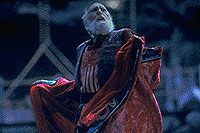
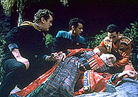

MANCHETE
DO EPISDIO
Histria
tenta desenvolver misticismo
Bajoriano sem obter bons resultados
Episdio
anterior | Prximo
episdio
Sinopse:
Data Estelar:
46729.1.

O'Brien
e Bashir, respondendo a um misterioso pedido de ajuda, se
transportam para uma vila Bajoriana bem a tempo de ver o povoado
sendo atacado por uma criatura "formada pelos pensamentos
negativos da populao do local em eras passadas".
Aparentemente, a nica forma de defesa a utilizao da
figura de um contador de histrias que tem por funo focalizar
a energia psquica da aldeia e afastar tal "besta".
Porm, durante o ltimo ataque, o contador de histrias
(chamado de Sirah pelos locais) morre. Em meio crise, a
comunidade seleciona erroneamente O'Brien como seu novo Sirah, na
esperana de que ele possa salv-los de tal entidade, o Dalrok.
Em uma trama secundria, uma adolescente, lder de um outro
povoado Bajoriano, vai a Deep Space Nine para
negociar limites territoriais com uma outra faco, onde ela
comea a nutrir uma amizade com Jake e Nog.
Comentrios:
A trama principal deste episdio est entre as mais
tolas de todos os tempos, com flagrantes problemas de execuo.
Mostra uma primeira tentativa, fracassada, de desenvolver os
conceitos do misticismo local existente entre os Bajorianos.
A explicao para o episdio reside exatamente no que parece
ser desde o incio, mostrando primeiro a incapacidade de
surpreender o telespectador, e em segundo, a falta de vontade de
tentar parecer verossmil.

A
trama secundria envolvendo Nog e Jake tambm uma completa
perda de filme. Representa apenas uma lder precoce tentando
driblar os problemas da infantilidade em meio a negociaes
importantes. Mostra o quanto a srie ainda engatinhava no
desenvolvimento de tramas polticas.
Apenas algumas falas razoavelmente afiadas de Bashir salvam este
episdio de ser o pior da temporada. Pssimos atores convidados
no ajudam a nenhuma das duas tramas.
Com a bvia necessidade de desenvolver o personagem Ben Sisko,
por que no fazer deste um episdio sobre a f Bajoriana e seu
Emissrio?
Diante das oportunidades perdidas nesse episdio, s resta fazer
o infame trocadilho com a msica de Chico Buarque: "O que
Sirah, que Sirah?..."
Citaes:
Bashir - "Don't
worry, chief. I have faith in you."
(No se preocupe, chefe. Eu tenho f em voc.)
Trivia:
 Episdio conta com a participao de Nog.
Episdio conta com a participao de Nog.
Ficha
tcnica:
Histria de Kurt Michael
Bensmiller
Roteiro de Kurt Michael Bensmiller e Ira
Steven Behr
Direo de David Livingston
Exibido em 03/05/1993
Produo: 014
Elenco:
Avery Brooks como
Benjamin Lafayette Sisko
Ren Auberjonois como Odo
Nana Visitor como Kira Nerys
Colm Meaney como Miles Edward O'Brien
Siddig El Fadil como Julian Subatoi Bashir
Armin Shimerman como Quark
Terry Farrell como Jadzia Dax
Cirroc Lofton como Jake Sisko
Elenco convidado:
Lawrence Monoson como Hovath
Kay E. Kuter como "o Sirah"
Gina Philips como Varis
Jim Jansen como Faren
Aron Eisenberg como Nog
Jordan Lund como Woban
Amy Benedict como "uma mulher"